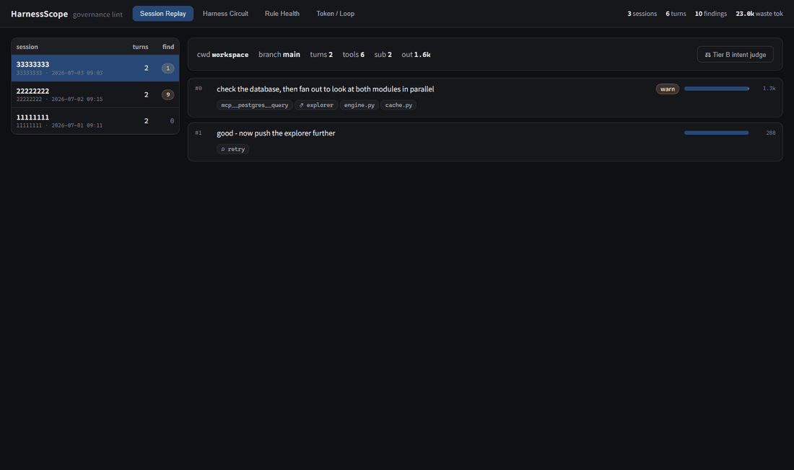

자체 소프트웨어가 하나도 없던 18인 제조·화학 중소기업 — 입사 4주 차, 혼자 만든 첫 시스템이 실제 업무에 투입됐습니다. 이후 약 2개월간 14개 업무 도메인으로 확장해 실운영에 안착시켰고, 그 위에 온톨로지·시멘틱 검색·RAG의 AI 레이어를 얹었습니다.
데이터가 6~7곳에 흩어져 있던 환경을 단일 정합 구조로 통합한 기록 — 화면·설계·검증 과정 전체를 이 사이트에 문서화해 두었습니다.
5분 코스에 더해, 직무와 맞닿은 심화 1편으로 설계 깊이를 확인합니다.
위 ERP 개발에 사용한 AI 에이전트 작업 규율을 관측 도구로 만들어 Apache-2.0으로 공개했습니다 — 세션 로그를 선언적 룰(R1~R13)로 턴 단위 판정하고, Session Replay·Rule Health·토큰 손실 뷰어와 MCP 서버(10툴)를 제공합니다. 이 도구가 탐지한 토큰 이중계산 버그를 LLM 관측 분야 Phoenix 개발사 Arize의 오픈소스에서 재현·수정해 제출했고, 메인테이너가 패치를 그대로 채택해 메인 브랜치에 병합했습니다.

여러 LLM 프로바이더를 단일 계층에서 라우팅하는 LiteLLM 게이트웨이 + Phoenix(OTLP) 관측을 자가 인프라에 직접 배포 — 스코프 가상키·예산 캡·모델 티어별 비용 롤업까지, 모든 LLM 호출이 한 곳에서 계측·통제되는 LLMOps 백본.
개인 R&D · 2026.07~645노드·781 typed 엣지 개념그래프에 렉시컬+시맨틱(pgvector)+그래프 3채널 하이브리드 검색(검색 자체는 LLM 0콜), LangGraph 기반 RAG와 MCP 서버로 에이전트에 노출. 회귀 평가 하네스(Recall@5 0.921)로 검색 품질을 게이트.
모든 도메인이 모이는 심장 — record_movement 단일 게이트와 SUM 파생.
Tier A생산 1행이 양품·원료 사건으로 쪼개져 게이트로 들어가는 길.
발주 보드 + 출고 이벤트 운임 SSoT + 개별법 COGS.
Tier A소요시간 자동계산 → 유량계 실측 로스 → 귀속 추적 → 생산계획 네팅.
Tier A카톡 인테이크 → 3단 판정엔진 → 인박스 → 발주/조율/반려.
Tier AAR/AP 원장 → 통장·마감잔액 → 받을어음 → 자금일보.
Tier A원장 절단 샘플 칸반의 진화 — 거래처 연동·부분출고·라벨·재고풀.
Tier B거래처 정제·매칭·마스터 관리.
Tier B한 테이블 위 다섯 레이어 — 세 뷰 + silent 폴링 + 비공개 메모.
Tier A이카운트 점진 탈피 · 은행 대사 · 데이터 계보 재구성.
Tier A용어사전을 PG 개념그래프로 승격한 정합 레이어.
Tier A비정형 16GB → pgvector 임베딩 · RRF 하이브리드 검색 · 정본 레지스트리 · 의미지도 · RAG 초안.
Tier B비정형 자료의 구조화 적재 — 문서허브의 전신.
만든 사람 — 비효율을 진단해 도는 시스템으로 만드는 일을 좋아합니다. 6년간 1인 이커머스(주문~정산 자동화)를 운영했고, 제조 회사 관리직으로 입사해 이 시스템을 만들었습니다. 이력서에서 더 보기 →
In English: Solo design, build and operation of a cloud full-stack ERP (FastAPI · React · PostgreSQL · Cloud Run) for an 18-person manufacturing/chemical SME in Korea — first production use four weeks in. Unified 6–7 scattered sources of truth into a single event-sourced backbone with domain-ontology validation, added a semantic document hub over 16GB of unstructured files, and open-sourced the AI-agent workflow tooling as harness-scope.
이력서 · 화면 둘러보기 · GitHub repo · agent-memory-llmops · awsgioh@gmail.com